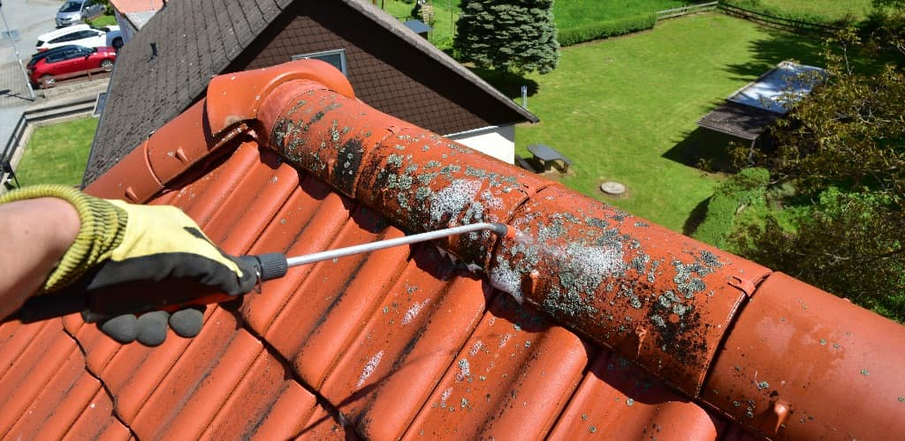
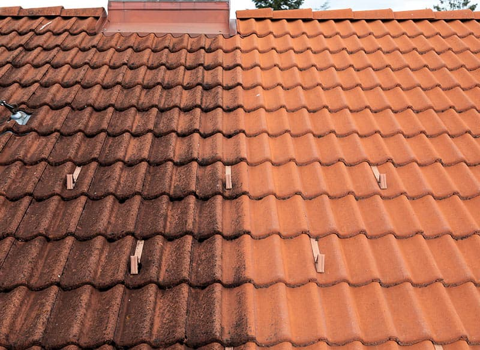
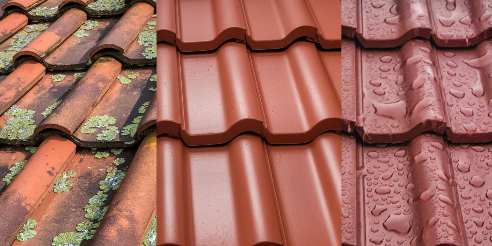
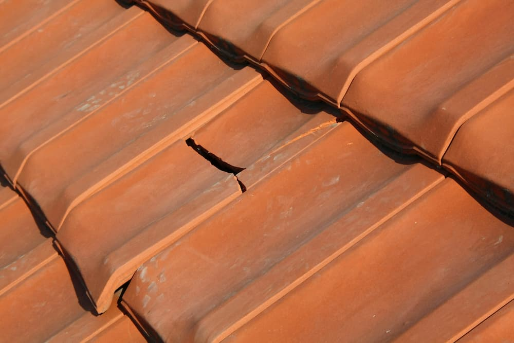
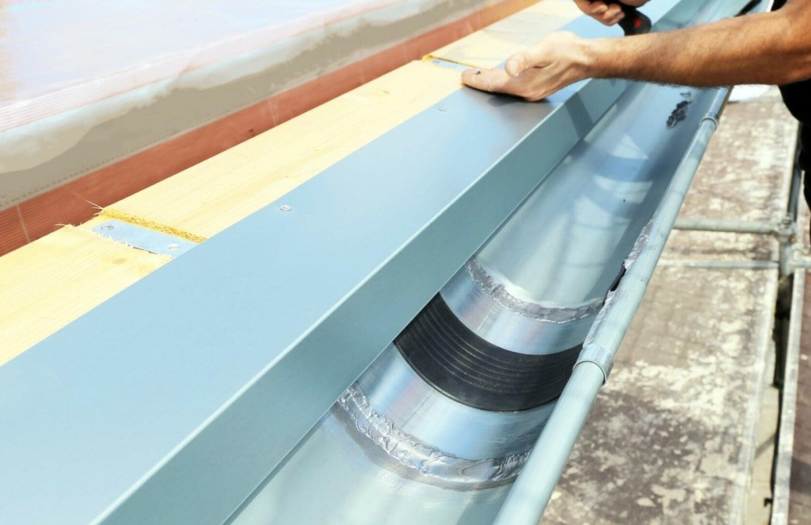
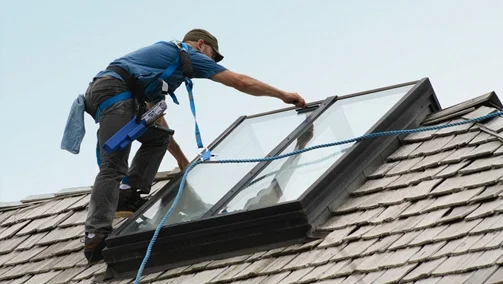
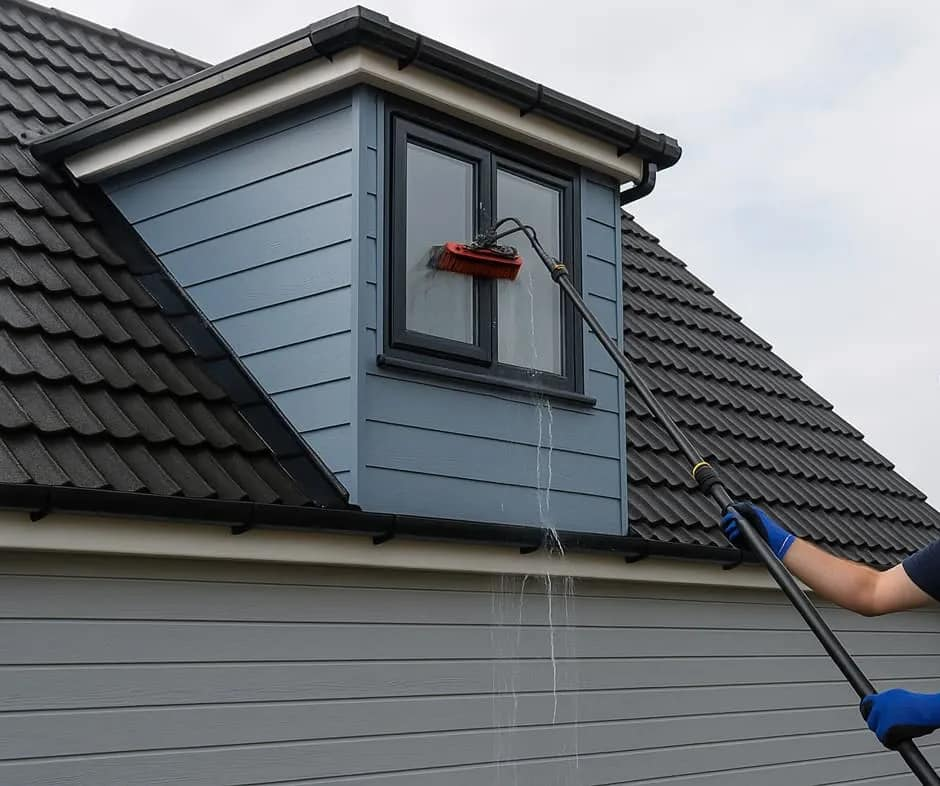

Fachgerechte Entfernung von Moos im Rahmen der Dachreinigung. Wir beseitigen Bewuchs schonend von geeigneten Flächen und tragen so zur Erhaltung der Dachsubstanz und zur Vermeidung von Feuchtigkeitsschäden bei.
Kontakt aufnehmen
Fachgerechte Entfernung von Algen im Rahmen der Dachreinigung. Wir beseitigen organische Beläge schonend von geeigneten Dachflächen und tragen zur Werterhaltung sowie zum Schutz vor Feuchtigkeitsschäden bei.
Kontakt aufnehmen
Fachgerechte Imprägnierung von geeigneten Dachflächen zum Schutz vor Feuchtigkeit, Verschmutzung und Witterungseinflüssen. Wir tragen schützende Mittel gleichmäßig auf und unterstützen so die langfristige Werterhaltung der Dachoberfläche.
Kontakt aufnehmen
Fachgerechte Kontrolle und Reparatur kleiner Dachschäden. Wir prüfen die Dachfläche sorgfältig, beheben kleinere Defekte zeitnah und sorgen für den Erhalt der Funktionalität sowie den Schutz vor Folgeschäden durch Witterungseinflüsse.
Kontakt aufnehmen
Fachgerechte Kontrolle und Reparatur kleiner Schäden an Dachrinnen. Wir prüfen die Funktion und Dichtheit, beheben kleinere Defekte und sorgen für einen sicheren Wasserablauf sowie den Schutz der Gebäudefassade.
Kontakt aufnehmen
Fachgerechte Reinigung von Dachfenstern im Innen- und Außenbereich. Wir entfernen Schmutz, Staub und Ablagerungen sorgfältig und sorgen für klare Sicht, gepflegte Oberflächen und eine verbesserte Lichtdurchlässigkeit.
Kontakt aufnehmen
Fachgerechte Reinigung von Gauben im Rahmen der Gebäude- und Dachpflege. Wir entfernen Schmutz, Ablagerungen und Verunreinigungen sorgfältig und sorgen für ein gepflegtes Erscheinungsbild sowie den Werterhalt der Bausubstanz.
Kontakt aufnehmen